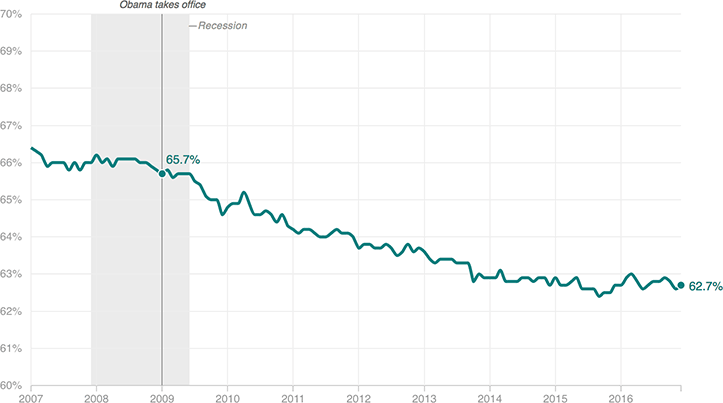

Labor Force Participation Remains Low
This chart shows the share of Americans 16 and older in the labor force (that is, working or looking for work). When President Obama took office in January 2009, that figure was at 65.7 percent. Today, it’s 62.7 percent, a sizable drop for this indicator.
